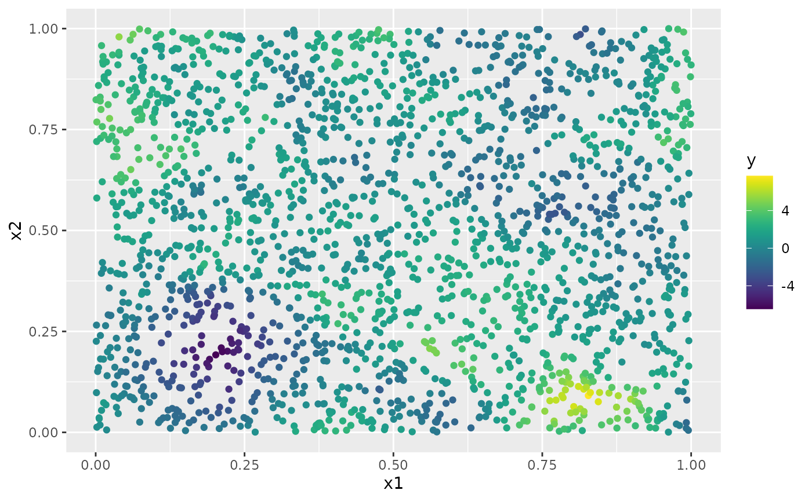
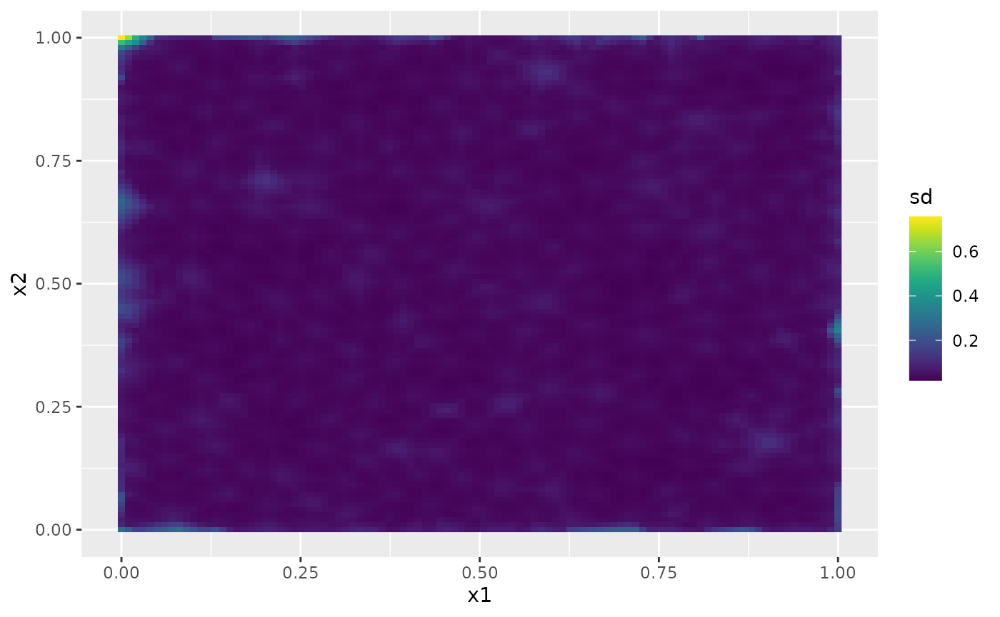

An introduction to the rSPDE package
David Bolin and Alexandre B. Simas
2021-12-11
Source:vignettes/rSPDE.Rmd
rSPDE.RmdIntroduction
In this vignette we will provide a brief introduction to the rSPDE package by providing a simple data set and using the different functions in the package to analyze it.
We have two main “families” of functions inside the rSPDE package:
The
R-INLAimplementation of the rational SPDE approach;The rational SPDE approach.
We will analyze the same data set using both approaches. We also have specific vignettes for each of the aforementioned family. More precisely, we have the following additional vignettes:
We also have a separate group of functions for performing operator-based rational approximations. These will be useful when performing rational approximations for fractional SPDE models with non-Gaussian noise. A example in which such approximation is suitable is when one has the so-called type G Lévy noises.
We refer the reader to Geostatistical Modelling Using Non-Gaussian Matérn Fields, Spatial Matérn Fields Driven by Non-Gaussian Noise and Linear mixed effects models for non-Gaussian continuous repeated measurement data for examples of models driven by type-G Lévy noises. We also refer the reader to the ngme package where one can fit such models.
We explore the functions for performing the operator-based rational approximation on the vignette:
A toy data set
We begin by creating a toy data set.
For this illustration, we will simulate a data set on a two-dimensional spatial domain. To this end, we need to construct a mesh over the domain of interest and then compute the matrices needed to define the operator. We will use the R-INLA package to create the mesh and obtain the matrices of interest.
We will begin by defining a mesh over \([0,1]\times [0, 1]\):
library(INLA)
m =500
loc_2d_mesh = matrix(runif(m*2),m,2)
mesh_2d = inla.mesh.2d(
loc=loc_2d_mesh,
cutoff=0.05,
max.edge=c(0.1,0.5) )
plot(mesh_2d)
We will now use the matern.operators function to construct a rational SPDE approximation of order \(m=2\) for a Gaussian random field with a Matérn covariance function on \([0,1]\times [0, 1]\). We choose \(\nu=0.5\) which corresponds to exponential covariance. We also set \(\sigma=1\) and the range as \(0.2\).
library(rSPDE)
#>
#> Attaching package: 'rSPDE'
#> The following object is masked from 'package:stats':
#>
#> simulate
sigma = 1
range = 0.2
nu <- 0.5
kappa = sqrt(8*nu)/range
op <- matern.operators(mesh=mesh_2d,nu=nu,
kappa=kappa,sigma=sigma,m=2)We are now in a position to simulate the latent field. We will simulate the latent field \(u\):
u <- simulate(op)Let us then consider a simple Gaussian linear model of a latent spatial field \(u(\mathbf{s})\), observed at \(m\) locations, \(\{\mathbf{s}_1 , \ldots , \mathbf{s}_m \}\). For each \(i = 1,\ldots,m,\) we have \[ \begin{align} y_i &= u(\mathbf{s}_i)+\varepsilon_i\\ \end{align}, \] where \(\varepsilon_1,\ldots,\varepsilon_{30m}\) are iid normally distributed with mean 0 and standard deviation 0.1.
We now obtain a realization of \(y\). To construct the observation matrix, we use the R-INLA function inla.spde.make.A().
A <- inla.spde.make.A(
mesh=mesh_2d,
loc=loc_2d_mesh)
sigma.e <- 0.1
y = A %*% u + rnorm(m) * sigma.eThe observed data can be seen in the following image.

The simulated random field is shown in the following figure.
Fitting the model with R-INLA implementation of the rational SPDE approach
We will now fit the model of the toy data set using our R-INLA implementation of the rational SPDE approach. Further details on this implementation can be found in R-INLA implementation of the rational SPDE approach.
We begin by creating the \(A\) matrix, the index, and the inla.stack object.
Abar <- rspde.make.A(mesh = mesh_2d, loc = loc_2d_mesh)
mesh.index <- rspde.make.index(name = "field", mesh = mesh_2d)
st.dat=inla.stack(
data=list(y=as.vector(y)),
A=Abar,
effects=mesh.index)We now create the model object. We need to set an upper bound for the smoothness parameter \(\nu\). When we increase the upper bound for \(\nu\) we also increase the computational cost. For this example we set nu_upper_bound=1. See the R-INLA implementation of the rational SPDE approach for further details.
rspde_model <- rspde.matern(mesh = mesh_2d,
nu_upper_bound = 1)Finally, we create the formula, taking the replicates into account, and fit:
f =
y ~ -1 + f(field, model=rspde_model)
rspde_fit =
inla(f,
data=inla.stack.data(st.dat),
family="gaussian",
control.predictor=
list(A=inla.stack.A(st.dat)),
inla.mode = "experimental")We can get the summary:
summary(rspde_fit)
#>
#> Call:
#> c("inla(formula = f, family = \"gaussian\", data =
#> inla.stack.data(st.dat), ", " control.predictor = list(A =
#> inla.stack.A(st.dat)), inla.mode = \"experimental\")" )
#> Time used:
#> Pre = 4.28, Running = 31.7, Post = 0.1, Total = 36.1
#> Random effects:
#> Name Model
#> field RGeneric2
#>
#> Model hyperparameters:
#> mean sd 0.025quant 0.5quant
#> Precision for the Gaussian observations 83.056 1.072 80.919 83.031
#> Theta1 for field -1.559 0.012 -1.581 -1.560
#> Theta2 for field 2.108 0.012 2.084 2.108
#> Theta3 for field 0.243 0.014 0.216 0.242
#> 0.975quant mode
#> Precision for the Gaussian observations 85.265 82.97
#> Theta1 for field -1.534 -1.56
#> Theta2 for field 2.131 2.11
#> Theta3 for field 0.272 0.24
#>
#> Marginal log-Likelihood: 26.48
#> Posterior summaries for the linear predictor and the fitted values are computed
#> (Posterior marginals needs also 'control.compute=list(return.marginals.predictor=TRUE)')and the summary in the user’s scale:
result_fit <- rspde.result(rspde_fit, "field", rspde_model)
summary(result_fit)
#> mean sd 0.025quant 0.5quant 0.975quant mode
#> tau 0.210119 0.00248226 0.205812 0.210243 0.215538 0.209774
#> kappa 8.223890 0.09578920 8.039620 8.234370 8.415540 8.244290
#> nu 0.559783 0.00342860 0.554124 0.560290 0.567388 0.559762
tau <- op$tau
result_df <- data.frame(parameter = c("tau","kappa","nu"),
true = c(tau, kappa, nu), mean = c(result_fit$summary.tau$mean,
result_fit$summary.kappa$mean,
result_fit$summary.nu$mean),
mode = c(result_fit$summary.tau$mode,
result_fit$summary.kappa$mode,
result_fit$summary.nu$mode))
print(result_df)
#> parameter true mean mode
#> 1 tau 0.2236068 0.2101194 0.2097745
#> 2 kappa 10.0000000 8.2238943 8.2442945
#> 3 nu 0.5000000 0.5597830 0.5597616Kringing with R-INLA implementation of the rational SPDE approach
Let us now obtain predictions (i.e. do kriging) of the latent field on a dense grid in the region.
We begin by creating the grid in which we want to do the predictions. To this end, we can use the rspde.mesh.projector() function. This function has the same arguments as the function inla.mesh.projector() the only difference being that the rSPDE version also has an argument nu and an argument rspde_order. Thus, we proceed in the same fashion as we would in INLA’s standard SPDE implementation:
projgrid <- rspde.mesh.projector(mesh_2d, xlim = c(0,1),
ylim = c(0,1))This lattice contains 100 × 100 locations (the default).
Let us plot the locations that we will do prediction:
coord.prd <- projgrid$lattice$loc
plot(coord.prd, type = "p", cex = 0.1)
Let us now calculate the predictions jointly with the estimation. To this end, first, we begin by linking the prediction coordinates to the mesh nodes through an \(A\) matrix
A.prd <- projgrid$proj$AWe now make a stack for the prediction locations. We have no data at the prediction locations, so we set y= NA. We then join this stack with the estimation stack.
ef.prd = list(c(mesh.index))
st.prd <- inla.stack(data = list(y = NA),
A = list(A.prd), tag = "prd",
effects = ef.prd)
st.all <- inla.stack(st.dat, st.prd)Doing the joint estimation takes a while, and we therefore turn off the computation of certain things that we are not interested in, such as the marginals for the random effect. We will also use a simplified integration strategy (actually only using the posterior mode of the hyper-parameters) through the command control.inla = list(int.strategy = "eb"), i.e. empirical Bayes:
rspde_fitprd <- inla(f, family = "Gaussian",
data = inla.stack.data(st.all),
control.predictor = list(A = inla.stack.A(st.all),
compute = TRUE, link = 1),
control.compute = list(return.marginals = FALSE,
return.marginals.predictor = FALSE),
control.inla = list(int.strategy = "eb"))We then extract the indices to the prediction nodes and then extract the mean and the standard deviation of the response:
id.prd <- inla.stack.index(st.all, "prd")$data
m.prd<- matrix(rspde_fitprd$summary.fitted.values$mean[id.prd],100,100)
sd.prd <- matrix(rspde_fitprd$summary.fitted.values$sd[id.prd],100,100)Finally, we plot the results. First the mean:

Then, the std. deviations:
Fitting the model with rSPDE
We will now fit the model of the toy data set without using R-INLA. To this end we will use the rational approximation functions from rSPDE package. Further details can be found in the vignette Rational approximation with the rSPDE package.
We will now use the function rSPDE.matern.loglike() to define the likelihood. This function is object-based, in the sense that it obtains several of the quantities it needs from the rSPDE model object.
Notice that we already created a rSPDE model object to simulate the data. We will, then, use the same model object. Recall that the rSPDE model object we created is op. We also already have the \(A\) matrix connecting the observation locations to the mesh, and we simply called it A.
To simplify parameter estimation, we create an objective function to maximize which is the negative log-likelihood, parametrized using the logarithm of each parameter to avoid constrained optimization.
mlik <- function(theta, Y, A, op) {
sigma = exp(theta[1])
kappa = exp(theta[2])
nu = exp(theta[3])
return(-rSPDE::rSPDE.matern.loglike(object = op, Y=Y,
A = A, user_kappa=kappa, user_sigma = sigma,
user_nu=nu, sigma.e = exp(theta[4])))
} We can now estimate the parameter using optimParallel (one can also use optim):
library(optimParallel)
#Preparing the parallel
cl <- makeCluster(detectCores()-1)
setDefaultCluster(cl=cl)
#Fitting the model
theta0 = c(get.inital.values.rSPDE(mesh=mesh_2d),
log(0.1*sqrt(var(as.vector(y)))))
start_time <- Sys.time()
pars <- optimParallel(theta0, mlik, Y = y, A = A, op=op)
end_time <- Sys.time()
total_time <- end_time - start_time
results <- data.frame(sigma = c(sigma, exp(pars$par[1])),
kappa = c(kappa, exp(pars$par[2])),
nu = c(nu, exp(pars$par[3])),
sigma.e = c(sigma.e, exp(pars$par[4])),
row.names = c("True", "Estimate"))
print(results)
#> sigma kappa nu sigma.e
#> True 1 10.000000 0.5000000 0.1000000
#> Estimate 1 8.098931 0.5277972 0.1134149
#Total time
print(total_time)
#> Time difference of 6.668748 secsKringing with rSPDE
We will now do kringing on the same dense grid we did for the R-INLA-based rational SPDE approach, but now using the rSPDE functions. To this end we will use the predict method on the rSPDE model object.
Observe that we need an \(A\) matrix connecting the mesh to the prediction locations.
Let us now create the \(A\) matrix for the same prediction locations we used for the previous case (using the R-INLA implementation).
predgrid <- inla.mesh.projector(mesh_2d, xlim = c(0,1),
ylim = c(0,1))
A.prd2 <- predgrid$proj$AWe will now use the predict method on the rSPDE model object with the argument compute.variances set to TRUE so that we can plot the standard deviations. Let us also update the values of the rSPDE model object to the fitted ones, and also save the estimated value of sigma.e.
sigma.e.est <- exp(pars$par[4])
op.prd <- update(op, user_sigma = exp(pars$par[1]),
user_kappa = exp(pars$par[2]),
user_nu = exp(pars$par[3]))
pred.rspde <- predict(op.prd, A = A, Aprd = A.prd2, Y = y,
sigma.e = sigma.e.est,
compute.variances = TRUE)Finally, we plot the results. First the mean:

Then, the std. deviations:
